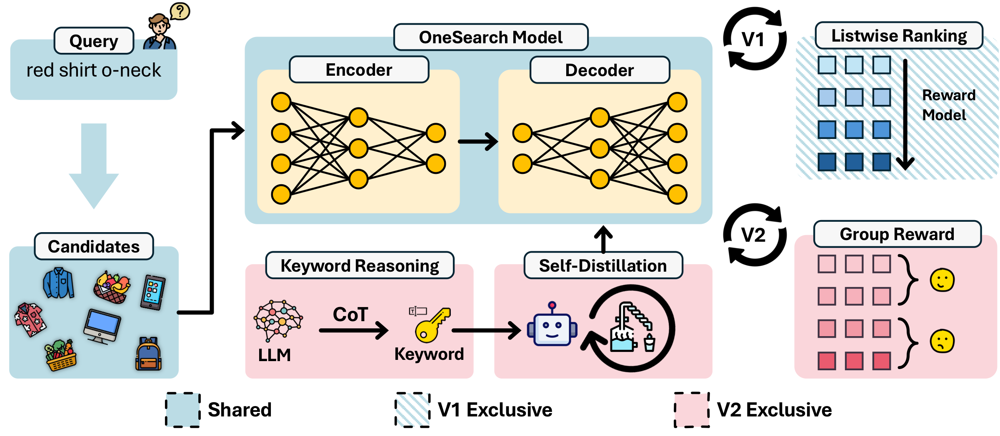
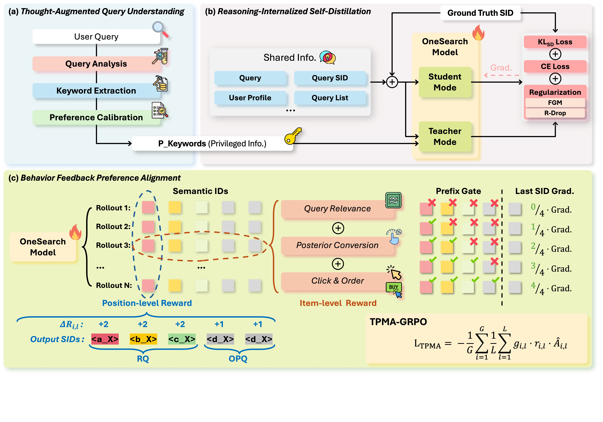
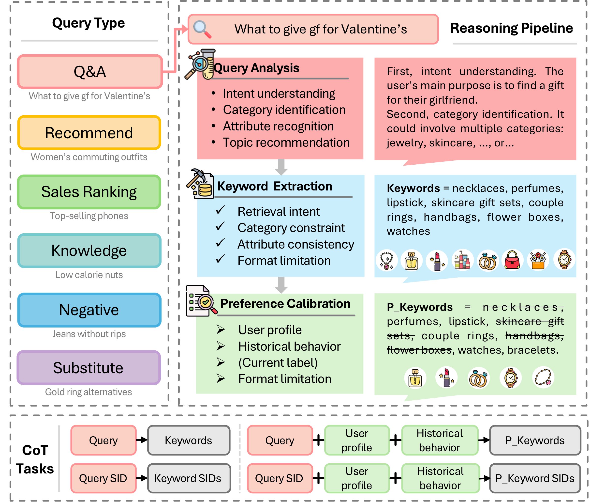
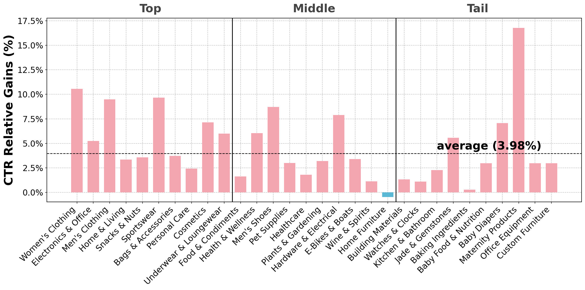
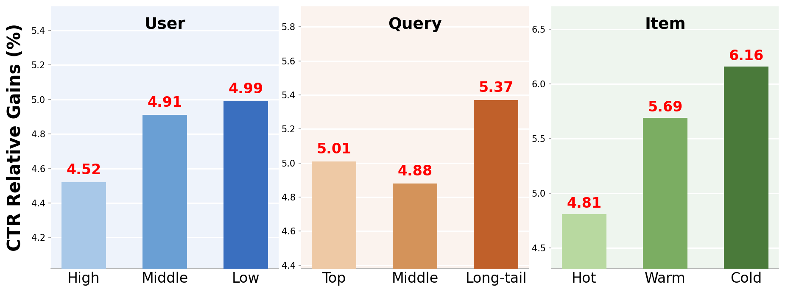
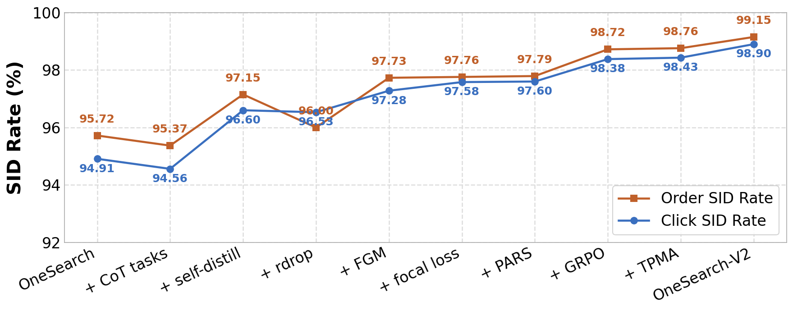

Kuaishou Technology, Beijing, China
* Equal Contribution † Corresponding Author
Generative Retrieval (GR) has emerged as a promising paradigm for modern search systems. Compared to multi-stage cascaded architecture, it offers advantages such as end-to-end joint optimization and high computational efficiency. OneSearch, as a representative industrial-scale deployed generative search framework, has brought significant commercial and operational benefits. However, its inadequate understanding of complex queries, inefficient exploitation of latent user intents, and overfitting to narrow historical preferences have limited its further performance improvement.
To address these challenges, we propose OneSearch-V2, a latent reasoning enhanced self-distillation generative search framework. It contains three key innovations:
Extensive offline evaluations demonstrate OneSearch-V2's strong query recognition and user profiling capabilities. Online A/B tests further validate its business effectiveness with +3.98% item CTR, +3.05% buyer conversion rate, and +2.11% order volume, without incurring additional inference costs or serving latency.
OneSearch-V2 extends the generative search framework with thought-augmented query understanding, reasoning-internalized self-distillation, and behavior feedback preference alignment.

Figure 1: OneSearch-V2 vs. V1. OneSearch-V2 extends the generative search framework with three key innovations: thought-augmented query understanding, reasoning-internalized self-distillation, and behavior feedback preference alignment.
We identify three key limitations that constrain performance of OneSearch
Typical search queries often lack concrete item targets. Long-tail queries with lexical disparity from target items (negation-type: "relieve fatigue, no supplements"; question-type: "what swimming essentials?") demand deeper semantic reasoning that V1 lacks in single-pass inference.
OneSearch's periodic updates rely on historical co-occurrence patterns and log-fitting, inevitably resulting in shallow matching that fails to uncover true user intent. LLM's explicit chain-of-thought reasoning cannot be deployed due to prohibitive latency.
The reward model, primarily trained on historical behavior logs, is susceptible to sampling bias and reward hacking, causing OneSearch to overfit narrow historical preferences and reinforce long-tail distributional bias in the search system.
The overall framework of OneSearch-V2, containing three key innovations

Figure 2: The Overall Framework of OneSearch V2. It contains (a) a thought-augmented complex query understanding module, (b) a reasoning-internalized self-distillation training pipeline, and (c) a behavior preference alignment optimization system. OneSearch-V2 effectively mitigates common search system issues such as information bubbles and long-tail sparsity, without incurring additional inference costs or serving latency.
Leveraging LLMs to generate compact keyword-based CoTs for complex query understanding
E-commerce search handles massive volumes of queries with complex intents: head queries with highly-divergent and underspecified intent, and tail queries with diverse semantic constraints. On Kuaishou Mall, these complex queries constitute ~one-third of total page views but only 8% of conversions.
We propose a three-step keyword-based CoT pipeline:

Figure 3: Three-step keyword-based CoT extraction pipeline for diverse complex query types, along with the corresponding CoT tasks.
Converting explicit CoT reasoning into fast, intuition-like inference without extra parameters
We propose a self-distillation mechanism that transfers explicit reasoning capability into model parameters, eliminating the need for additional trainable parameters, special tokens, or extra inference cost.
Two forward passes with independent dropout masks, symmetric KL penalty for prediction consistency
Fast Gradient Method on input embeddings for input robustness, smoothing loss landscape around ambiguous inputs
ℒSDFT = ℒCE + αKL·ℒKL + αR·ℒR-Drop + ℒadv
Token-position marginal advantage for precise hierarchical credit assignment
OneSearch-V2 replaces the separately trained reward model with a direct behavior feedback preference alignment system, using composite rewards from real user interactions.
SID generation follows a strict hierarchical causal structure (coarse→fine). Standard GRPO assigns uniform advantage to every token, ignoring this structure. TPMA decomposes the sequence-level reward into position-level marginal contributions:
All models adopt the same deployment paradigm with no additional inference cost
| Method | Item CTR | PV CTR | PV CVR | Buyer Volume | Order Volume |
|---|---|---|---|---|---|
| OneSearch-V1 (Baseline) | — | — | — | — | — |
| OneSearch-V2RAG | +0.52% | +0.77% | +0.63% | +1.04% | +1.07% |
| OneSearch-V2Reason | +2.59% | +1.42% | +2.21% | +1.50% | +1.57% |
| OneSearch-V2 (Full) | +3.98% | +1.17% | +2.90% | +2.07% | +2.11% |
Table: Online A/B Testing Results. Bold values indicate statistical significance (P-value < 0.05).
| Method | Order (7229) | Click (30k) | ||
|---|---|---|---|---|
| HR@10 | MRR@10 | HR@10 | MRR@10 | |
| OneSearch (V1 baseline) | 0.2046 | 0.0985 | 0.2231 | 0.0728 |
| + CoT Tasks | 0.2094 | 0.1008 | 0.2266 | 0.0731 |
| + Self-Distillation | 0.2163 | 0.1017 | 0.2398 | 0.0757 |
| + R-Drop | 0.2168 | 0.1045 | 0.2398 | 0.0760 |
| + FGM | 0.2180 | 0.1047 | 0.2422 | 0.0766 |
| + Focal Loss | 0.2214 | 0.1048 | 0.2471 | 0.0788 |
| + GRPO | 0.2248 | 0.1106 | 0.2481 | 0.0798 |
| + TPMA | 0.2265 | 0.1136 | 0.2498 | 0.0815 |
| OneSearch-V2 (Full) | 0.2314 | 0.1151 | 0.2568 | 0.0833 |
Table: Incremental offline performance. Best results in bold, sub-optimal underlined.

Figure 4: The online CTR relative gains for top/middle/tail 10 industries respectively. Almost all industries experienced increases, with an average gain of 3.98%. Improvements are more pronounced in categories with extensive head but ambiguous queries, such as Clothing, Shoes, Cosmetics, and Hardware & Electrical.

Figure 5: CTR relative gains for various user/query/items segments. OneSearch-V2 demonstrates consistent improvements across all user segments. Long-tail queries achieve the most pronounced improvement of 5.37%, and cold items benefit most significantly with a remarkable 6.16% CTR improvement.

Figure 6: The SID rate of the proposed innovations with OneSearch on the industry dataset. The final OneSearch-V2 achieves optimal results (99.00% for click, and 99.20% for order), maintaining semantic coherence while generating diverse and relevant item candidates.
| Method | Page Good Rate | Item Quality | Query-Item Relevance |
|---|---|---|---|
| OneSearch-V2Reason | +1.12% | +0.28% | +1.01% |
| OneSearch-V2 (Full) | +1.37% | +0.55% | +1.65% |
Table: Manual evaluation results for online search experience quality (200 queries, 3200 query-item pairs).
Self-Distill (S) consistently outperforms Base (T) across all metrics, despite never observing keywords at inference time. This confirms that reasoning capability is encoded into model weights — not relying on keyword inputs.
Cold items (published within 7 days with no interactions) benefit most significantly from OneSearch-V2, achieving a remarkable 6.16% CTR improvement. This is critical for platform ecosystem health and merchant satisfaction.
Long-tail queries achieve the most pronounced improvement of 5.37% CTR gain, followed by high-frequency (5.01%) and middle-frequency (4.88%) queries. CoT-enhanced semantic alignment excels at handling ambiguous or rare queries.
OneSearch-V2 achieves all improvements without additional inference cost or serving latency. The keyword-based CoT generation is performed asynchronously, and reasoning is internalized into model weights.
If you find this work useful for your research, please cite our paper:
@misc{chen2026onesearchv2latentreasoningenhanced,
title={OneSearch-V2: The Latent Reasoning Enhanced Self-distillation Generative Search Framework},
author={Ben Chen and Siyuan Wang and Yufei Ma and Zihan Liang and Xuxin Zhang and Yue Lv and Ying Yang and Huangyu Dai and Lingtao Mao and Tong Zhao and Zhipeng Qian and Xinyu Sun and Zhixin Zhai and Yang Zhao and Bochao Liu and Jingshan Lv and Xiao Liang and Hui Kong and Jing Chen and Han Li and Chenyi Lei and Wenwu Ou and Kun Gai},
year={2026},
eprint={2603.24422},
archivePrefix={arXiv},
primaryClass={cs.IR},
url={https://arxiv.org/abs/2603.24422},
}